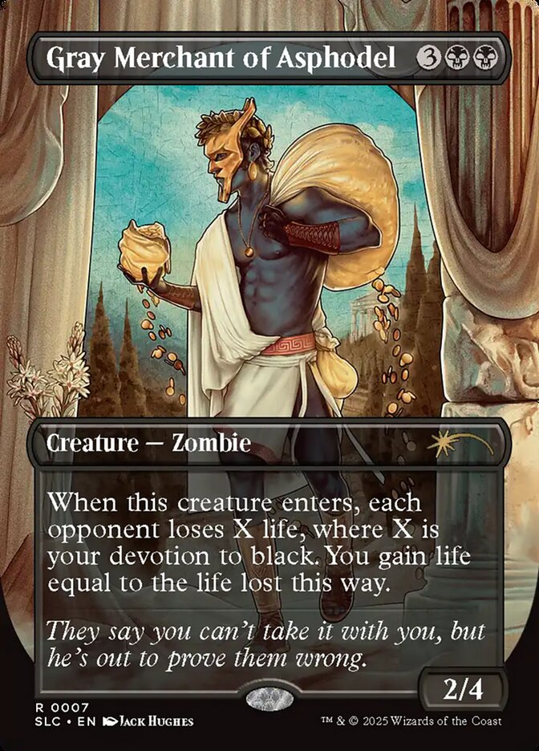
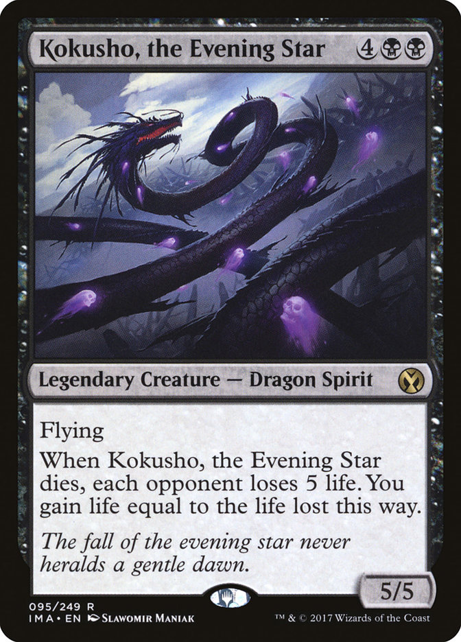
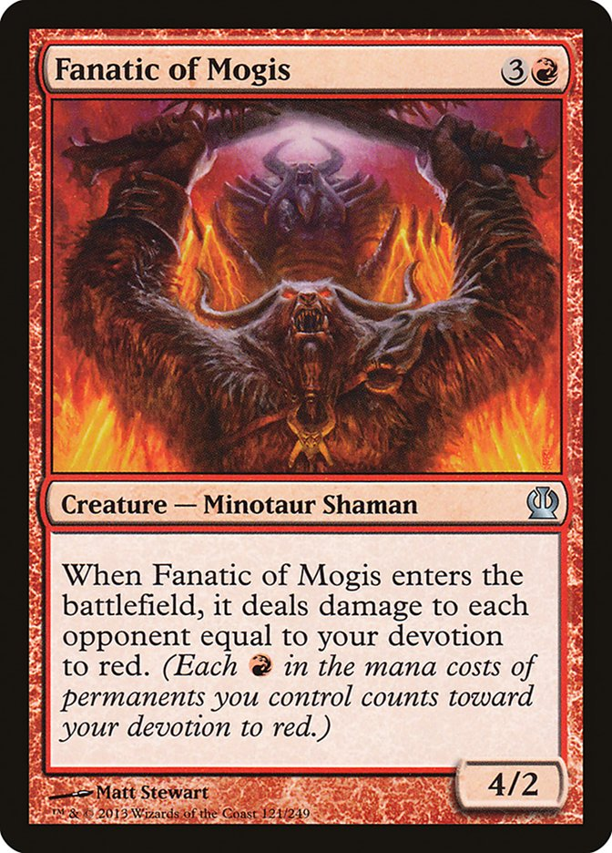
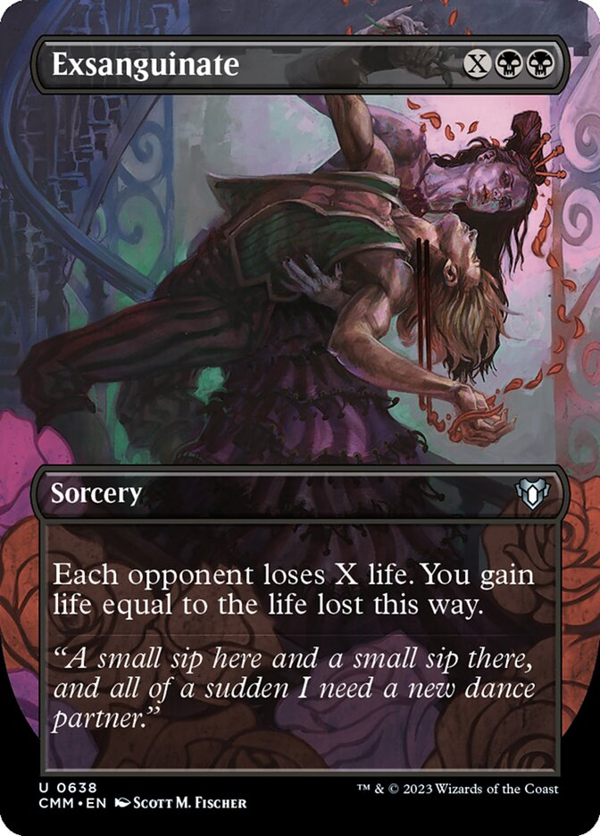

Gray Merchant of Asphodel, often referred to as Gary, is a Magic the Gathering card originally printed in 2013. It has since then been reprinted many times since then, with the most recent printing in 2025. This card is often used to finish games, or greatly swing them in one player's favour. Due to the wording of this card, the life gained greatly increases depending on the number of opponents you have.

| Relevant Mechanics | |
|---|---|
| Name | Explanation |
| Devotion | Devotion refers to the number of symbols in the top right corner of the card, often referred to as "pips". The total pips with the same symbol is a player's devotion. |
| Enter the Battlefield | Creatures in Magic are placed onto the battlefield. Some creatures like Gary will have effects that occur when they hit the battlefield. It is important to note that these still hit the "Stack", a place where cards go to give other players a chance to respond with their own cards. |
| Life Loss | Life loss in magic the gathering is not the same as damage, and can very rarely be prevented, unlike damage. However, damage causes loss of life. |

Kokusho, the evening star
Fanatic of Mogis
Exsanguinate